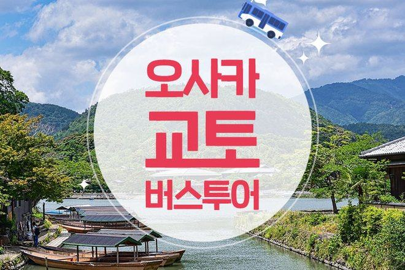
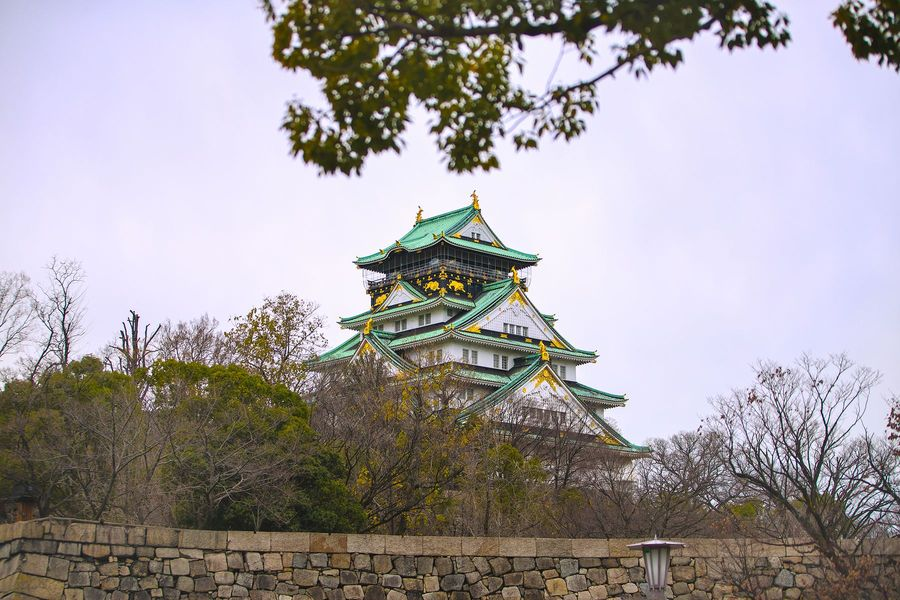
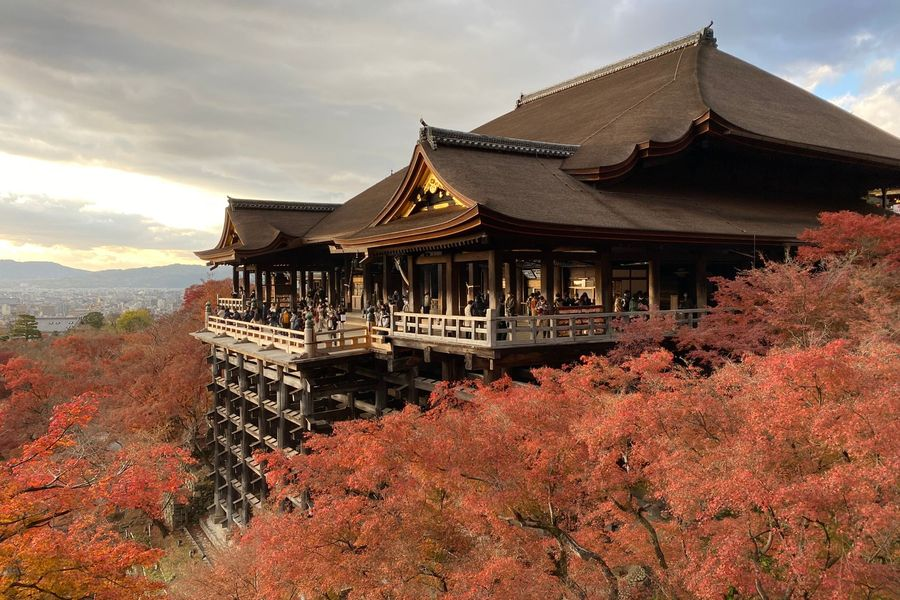

가이드투어 5%오사카·교토 · 인디고트래블
오사카·교토 일일 버스투어 (후시미이나리·아라시야마·은각사·청수사)
예약 성사율 89% · 네이버 여행 기준
- 10시간 30분
- 예약 후 안내
- 입장료 별도
- 현장 +9,400원
7일 전까지 무료 취소
5%56,050원59,000원/ 1인
현장 추가금 포함 실질 65,450원
오사카·교토는 하루면 후시미이나리·아라시야마·은각사·청수사를 도는 버스투어(1인 56,050원)로 오전을 채우고, 오후엔 도톤보리에서 카레 990엔이나 쿠시카츠 143엔짜리 한 끼로 끝낼 수 있는 도시입니다. 항공·숙소까지 묶으려면 2박 3일 패키지가 61만 6,550원(인천 출발)부터이고, 고베·교토·나라까지 넣은 상품은 77만 5,903원(대구 출발)입니다. 아래에서 투어, 맛집, 선물, 숙소 순서로 확인하고 필요한 것만 골라 예약하세요.

네이버 여행에서 지금 판매 중인 상품입니다. 표시 가격은 1인 기준 최저가이고, 미팅 장소·입장료 포함 여부·현장 추가금·취소 마감일을 카드에 그대로 적었습니다.

가이드투어 5%오사카·교토 · 인디고트래블
예약 성사율 89% · 네이버 여행 기준
7일 전까지 무료 취소
현장 추가금 포함 실질 65,450원
오사카·교토 · 하나투어
예약 성사율 80% · 네이버 여행 기준
30일 전까지 전액 환불
오사카·교토 · 교원투어 여행이지
예약 성사율 86% · 네이버 여행 기준
30일 전까지 전액 환불
| 상품 | 가격(1인) | 소요·가이드 | 미팅·시각 | 포함 사항 | 현장 추가금 | 최소/최대 인원 | 취소 규정 |
|---|---|---|---|---|---|---|---|
| 오사카·교토 일일 버스투어 (후시미이나리·아라시야마·은각사·청수사)인디고트래블 · 가이드투어 | 59,000원56,050원 5% 할인가 | 10:30 한국어 |
예약 확정 후 집결 장소·시간을 카카오톡으로 안내 오전 출발 · 시간은 확정 안내 |
차량 제반 비용, 인디고트래블 소속 한국인 정규 가이드 | ⚠ 은각사 입장료 성인 500엔 외 2건 | 상세페이지 확인 필요 | 투어일 7일 전까지 취소·변경 가능 · 6일 전부터 환불 불가 |
| 대구 출발 오사카·고베·교토·나라 3일 (판매1위·조석패턴)하나투어 · 풀패키지 | 799,900원775,903원 3% 할인가 | 2박 3일 한국어 |
대구국제공항 출발 항공 스케줄에 따라 상이 |
왕복 항공·유류할증료·TAX, 호텔 2박, 일정표상 식사·입장료, 인솔자 | ⚠ 선택 관광·개인 경비 | 상세페이지 확인 필요 | 30일 전까지 전액 환불 · 20일 전 10% · 10일 전 15% · 8일 전 20% · 1일 전 30% · 당일 50% |
| 인천 출발 오사카 3일 (온천호텔·기모노숲·고베야경)교원투어 여행이지 · 풀패키지 | 649,000원616,550원 5% 할인가 | 2박 3일 한국어 |
인천국제공항 출발 스루가이드 동행 · 출발 1~2일 전 안내전화 |
왕복 항공권·TAX·유류할증료, 숙박 2박(2인1실), 일정표상 식사·입장료 | ⚠ 선택 관광·개인 경비 | 상세페이지 확인 필요 | 30일 전까지 전액 환불 · 29일 전 10% · 19일 전 15% · 9일 전 20% · 7일 전 30%(이후 불가) |
표는 좌우로 넘길 수 있습니다. ‘상세페이지 확인 필요’는 판매 페이지에 값이 표기되지 않은 항목입니다.
투어·패키지 링크는 네이버 여행 커넥트 제휴 링크입니다. 예약이 이루어지면 판매자로부터 수수료를 받지만, 결제 금액은 같습니다.
도톤보리·난바는 걸어서 15분, 우메다는 지하철 2정거장. 간사이공항에서 난카이 라피트로 난바에 내리면 점심 한 끼는 도톤보리 안에서 끝납니다. 값은 모두 2026년 11월 공식 메뉴판 기준입니다.
달걀을 풀어 섞고 우스터소스 두세 방울. 카레 990엔은 2026년 7월 14일 개정가입니다.
카드 불가 · 현금기본 1,150엔에 토핑 400엔(돼지고기·오징어)·500엔(관자·새우·굴) 2개를 더하는 방식. 자리에 앉은 뒤 추가 주문은 안 됩니다.
예약 불가 · 카드는 3,000엔부터소스는 한 번만 찍는 규칙(두 번 찍기 금지). 1인 1드링크 주문이 필요합니다.
예약은 평일 18시까지 2인부터국물은 만들지 않고 그때마다 내는 방식. 가게가 밝힌 가격표가 메뉴별로 따로 없어 1인 예산으로 적었습니다.
냄비 요리는 L.O. 19:30에 끝납니다가쓰오·곤부 다시로 반죽하고 시소 잎을 올려 굽는 스타일. 우메다·오사카역에서 걸어서 5분.
카드·전자화폐 불가 · 현금2026년 11월 18일 확인. 모든 가게는 구글 지도에서 실제 영업 중(OPERATIONAL)임을 확인했고, 메뉴 가격은 공식 메뉴판·카카오맵 메뉴 정보 또는 2026년 9~11월 방문 기록이 일치하는 값만 실었습니다. 제주 5곳의 원화 가격은 환산 없이 그대로 적었습니다.
돈키호테와 드럭스토어, 공항 면세점 세 곳이면 끝납니다. 다만 2026년 11월 1일 구매분부터 면세가 '매장에서 바로 빼주는' 방식이 아니라 출국할 때 공항에서 돌려받는 리펀드 방식으로 바뀌었습니다. 계산은 세금 포함으로 하고, 수하물 위탁 전에 세관 키오스크에서 여권을 찍어야 환급됩니다.
정가가 12개입 1,036엔으로 올랐습니다. 24개입(2,073엔)도 개당 86.4엔으로 12개입과 같은 단가입니다.
초콜릿이라 25도 이상에서 녹습니다면세점 800엔, 시내 매장 864엔. 냉장 제품이라 마지막 날 사서 아이스팩과 함께.
냉장 보관 · 여름엔 보냉 필수78매는 큰 원형, 156매는 작은 기본형. 부모님 선물 1순위인데 156매는 1,000엔 안팎입니다.
의약외품 · 자가사용 범위돈키호테 698~848엔, 마쓰모토 980엔. 국내 올리브영 12,900원보다 40%가량 쌉니다.
시트형 · 기내 반입 가능2식 740엔(개당 370엔), 5식 1,998엔(개당 400엔). 개당은 2식이 싸고, 나눠 줄 땐 5식이 낫습니다.
액상 스프 · 위탁 수하물 권장한국 주류 면세는 병 수 제한 없이 합계 2L·400달러 이하입니다. 720ml 두 병이 딱 1.44L.
주류 · 위탁 수하물트립닷컴에서 직접 예약하는 숙소·항공권과, 현지에서 쓸 입장권·공항픽업·eSIM·공항철도입니다. 체크인 날짜와 방문일을 넣으면 그날 요금으로 열리고, 예약·결제는 트립닷컴에서 그대로 이루어집니다.
이 포스팅은 트립닷컴 파트너스 활동의 일환으로, 예약이 이루어지면 일정액의 수수료를 제공받습니다. 숙소·항공권 가격과 예약 조건은 트립닷컴에서 그대로 결제되며, 수수료 때문에 가격이 올라가지 않습니다.
같은 도시의 교통패스 본전, 공항에서 시내까지 실제 요금, 패키지 실지출을 숫자로 계산한 글입니다.

도톤보리·난바·우메다에서 실제로 영업 중인 다섯 곳. 공식 메뉴판 가격과 원화 환산, 휴무·대기·결제 함정, 그리고 오전 투어 뒤 점심·선물·숙소로 이어지는 하루 시간표를 정리했습니다.
11월 단풍 시즌, 인천 출발 3박4일 2인 기준. 항공·숙소·교통패스·식비·현장 추가금을 실제 판매가로 계산하고, 줄일 수 있는 항목과 줄이면 안 되는 항목을 갈랐습니다.

2026년판 1일권 3,500엔, 2일권 5,000엔. 하루를 24시간이 아니라 새벽 3시에 끊는 규칙, 시설 1회 제한, 국내 판매가와 엔화 정가의 차이까지 실제 계산으로 정리했습니다.

버스투어 56,050원에 입장료·점심을 더하면 2인 160,900원, 자유일정은 91,300원. 7만 원 차이와 하루 네 곳을 도는 현실, 교토 1일권 1,100엔 손익분기를 함께 계산했습니다.

JR 1,210엔, 리무진버스 1,800엔, 단독차량 86,900원. 2인·4인 왕복 총액과 리무진버스 17:10 막차, USJ 입장권 8,400엔부터 오르는 수요 연동 가격까지 계산했습니다.

대구 출발 775,903원과 인천 출발 616,550원, 자유여행 568,200원. 15만 9천 원 차이의 정체와 2박3일의 실제 관광 시간 1.5일, 두 상품의 정반대 취소 규정을 비교했습니다.
2026년 11월 1일부터 일본 면세가 리펀드 방식으로 바뀌었습니다. 세금 포함으로 결제하고 출국할 때 세관 키오스크에서 돌려받는 절차, 그리고 시로이코이비토·로이스·휴족시간·동전파스·이치란의 2026년 11월 정가와 구매처를 정리했습니다.